링크 하나로 바로 열린다
설치도 앱 스토어도 없이 브라우저에서 3D 게임이 열립니다. 빌드 도구 없이 브라우저 ES 모듈과 three.js로 짜서, 개발 서버에서 되는 코드가 게시본에서도 같은 보안 정책으로 돕니다.
처음 받는 크기 11.48 → 6.10MB (모델 양자화 + 밤·이사 주민 모델 나중에 받기). 전체 묶음 26.6 → 21.5MB.
작은 섬에 이사 와서 채집하고, 동물 주민과 이모티콘으로 이야기하며 친해지고, 집과 섬을 꾸미다가 섬 축제를 여는 오리지널 IP 게임입니다. 설치 없이 링크 하나로 열리고, 모든 3D 모델은 Blender 스크립트로 직접 만들었습니다. 2026년 10월 28일 기획부터 16일 동안 Claude Code 병렬 세션으로 개발했습니다.
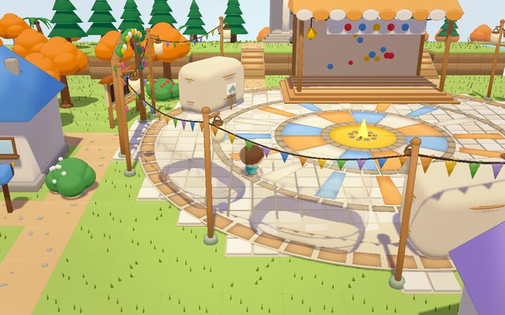
숫자는 저장소 main e6956d4에서 직접 센 값입니다. GPU 시간은 Intel UHD 내장 그래픽, 1280×800, 광장 낮 기준 (docs/notes/p40-perf.md). 확인하지 못한 값은 적지 않았습니다.
플레이어는 섬 이름과 자기 이름을 정하고 배에서 내립니다. 상점 주인 밤톨의 첫날 안내를 따라 도구를 들고 채집하고, 상점에 팔고, 박물관에 기증하고, 집에 들어가 봅니다. 그 뒤로는 주민 여섯과 친해지며 축제 부품 다섯을 모으고, 섬 축제와 단체 사진으로 첫 이야기를 마무리합니다. 엔딩 뒤에도 계절 행사, 이사 오가기, 무인도 여행, 밤 시장이 이어집니다.
게임 시간은 처음에 실제보다 12배 빠르게 흘러 게임 하루가 실제 2시간입니다. 왼쪽 위 원형 시계로 오늘 안에서 낮과 밤을 자유롭게 오갈 수 있고, 날짜는 앞으로만 넘어갑니다.
모두 스펙 JSON 하나에서 Blender로 다시 만들 수 있는 리깅된 3D 모델입니다. 걷기·달리기·기뻐하기·앉기 동작을 함께 굽습니다.
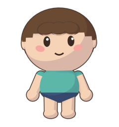
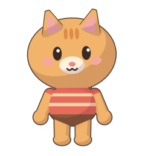
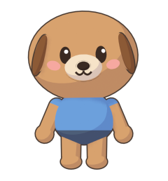
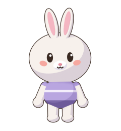
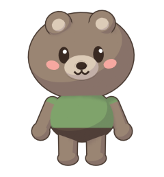
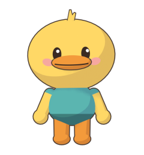
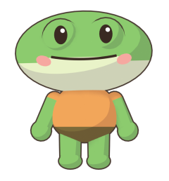
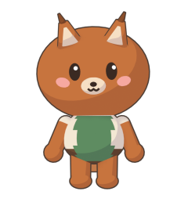
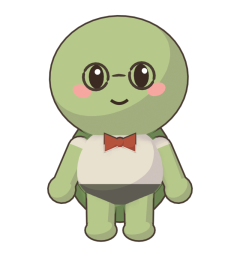
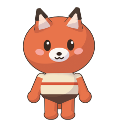
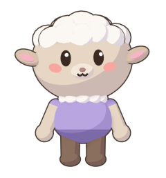
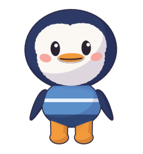
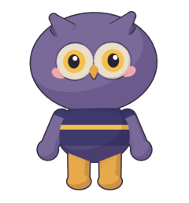
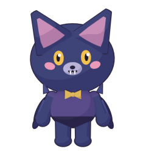
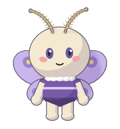
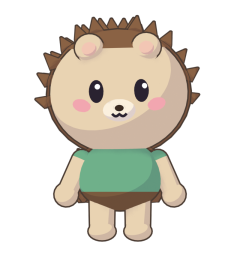
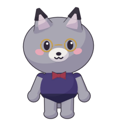
하늘·조명·안개·셰이더 효과가 실제 시각과 날씨를 따라 바뀝니다. 아래는 모두 게임 안 캡처입니다.
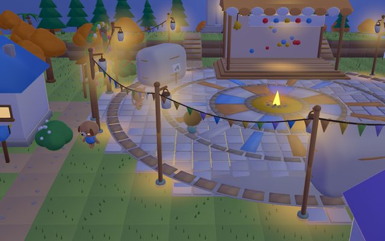
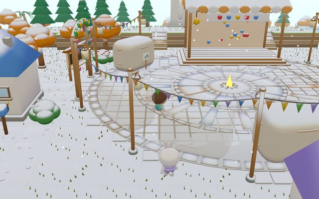
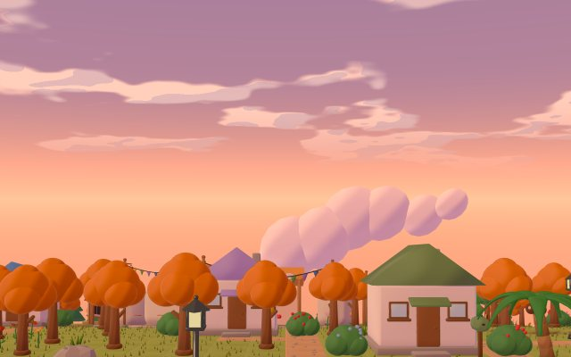
M은 마일스톤, 끝나면 할 수 있는 큰 목표입니다. 「완료」는 게임 링크에 게시된 것, 「main 합침」은 저장소에는 들어갔지만 아직 게임 링크에 올리지 않은 것입니다.
#check, 접근성, 저장 내보내기, 문제 알리기, 그래픽 사양 4단계, 하늘 셰이더, 마우스 걷기, 상점·박물관 실내설치도 앱 스토어도 없이 브라우저에서 3D 게임이 열립니다. 빌드 도구 없이 브라우저 ES 모듈과 three.js로 짜서, 개발 서버에서 되는 코드가 게시본에서도 같은 보안 정책으로 돕니다.
처음 받는 크기 11.48 → 6.10MB (모델 양자화 + 밤·이사 주민 모델 나중에 받기). 전체 묶음 26.6 → 21.5MB.
성능은 개발 PC의 Intel 내장 그래픽에서 GPU 타이머로 잽니다. 사양 4단계에 자동 낮추기가 있고, 새 셰이더 효과는 그 효과가 필요한 날에만 셰이더 코드째 넣습니다. 낮음 이하는 같은 효과를 CPU로 흉내 내 GPU 비용이 늘지 않습니다.
광장 GPU 시간: 높음 10.5 · 적정 5.0 · 낮음 2.9 · 매우 낮음 1.8ms. 자동 낮춤 기준은 33ms.
모든 모델은 스펙 JSON을 Blender 헤드리스 스크립트가 읽어 만듭니다. 색이나 크기를 바꾸고 싶으면 값을 고쳐 다시 빌드하면 되고, 바꿀 때 지켜야 할 약속(재질 이름 · 뼈 · 충돌 크기)은 테스트가 잡습니다.
모델 322 = 캐릭터 17 · 배경 89 · 가구 60 · 붙박이 22 · 아이템 122 · 옷 12. 빌더 스크립트 9개 8,816줄.
아이템 값, 출현 확률, 행사 날짜, 주민 성격과 대사, 장면, 곡, 셰이더 값, 섬 지도가 모두 JSON입니다. 브라우저 편집기에서 고쳐 저장하고 채팅에 「요소 반영」처럼 한 줄을 보내면 게임에 들어갑니다.
장면 28 · 곡 10 · 주민 파일 12. 편집기: 리소스 · 스토리 · 요소 · 곡 · 스타일 + 편집기 홈.
새 리소스나 큰 방향은 검수 보드에서 먼저 정합니다. 선택지마다 그림과 추천안이 있고, 고른 결과는 반영 기록으로 남아 되돌릴 수 있습니다. 지난 보드는 편집기 홈 보관함에 n차로 모입니다.
검수 보드 15개 · 결정 번호 D1–D147 (보드), 트랙 결정 D150 이후는 노트에 기록.
자동 플레이 봇이 사람처럼 키와 단추만으로 새 게임부터 엔딩, 1년 뒤 축제까지 합니다. 계절 행사 · 실내 · 시계는 따로 점검 도구가 있고, 콘솔 오류가 하나라도 나면 실패입니다.
최근 자동 플레이 30 통과 · 어색함 0 · 막힘 0 (11-12, P51). 행사 점검 8/8 · 시계 점검 15/15 · 규칙 테스트 525.
조정 세션이 일을 파일이 겹치지 않는 트랙으로 나누고, 트랙 세션마다 자기 git worktree에서 만듭니다. 모듈끼리는 이벤트와 서비스 약속으로만 이어져서 다른 트랙이 없어도 각자 확인할 수 있습니다.
16일 동안 커밋 489 · 합치기 115. 11-12 하루에 트랙 8개를 동시에 돌려 6개를 main에 합침.
개발 일지와 점검 노트에 남은 것을 그대로 옮겼습니다. 주황 띠는 공개 전에 꼭 풀어야 할 것, 갈색 띠는 다음 차수에 다룰 것입니다.
지금까지 플레이는 개발자와 자동 플레이 봇뿐입니다. 게임 안 「문제 알리기」와 기기 점검 기록 저장소도 비어 있습니다.
근거: devlog 11-08 「게임 저장소 문제 0 · 기기 점검 0」. 봇 점검은 막힘을 찾을 뿐 재미와 밸런스는 판단하지 못합니다.
claude.ai에서 게시본 직접 열기, iPhone · Android 실기기, 다른 GPU, 휴대폰 데이터로 첫 로딩 시간, 다른 계정으로 공유 링크 열기는 사람이 해야 하는 점검입니다.
근거: docs/notes/release.md RC-05 · 06 · 07 · 08 · 12 「대기」. RC-01–04 · 09–11은 Claude가 확인함.
터치 패드, 두 손가락, 안전 영역, 가로·세로 창 배치를 만들고 375px 터치 흉내로 엔딩까지 봇을 돌렸지만, 실제 휴대폰 GPU와 발열, 터치 감은 모릅니다. 휴대폰은 지금 적정 사양으로 시작해 느리면 낮춥니다.
근거: 자동 플레이 휴대폰 375×812 21 통과 · 막힘 0 (11-05). 일지 추천 「휴대폰은 처음 사양을 낮음으로 시작하는 것도 고려」.
병렬 트랙에서 새로 만든 모델과 장면이 아직 사용자 확인 전입니다. 게임은 확정 여부와 상관없이 쓰고 있어서, 모양이 마음에 안 들면 나중에 교체해야 합니다.
근거: 스펙 status 「review」 — 모델 56 (캐릭터 3 · 배경 14 · 가구 10 · 붙박이 10 · 아이템 19) · 장면 12.
M13 나머지 · M14 · M15 · 밤 미술상 · 박물관 관은 main에 합쳤지만 게임 링크는 아직 v39입니다. 합친 main에서 전체 자동 플레이와 실내 점검을 다시 돌리지 않았습니다.
근거: devlog 세션 5 「확인 못 함」.
매일 할 거리, 집 증축, 잠수, 미술품 감정은 레퍼런스작의 익숙한 문법에 가깝습니다. 이모티콘 대화와 밤·새벽, 무인도 투어처럼 포근섬만의 것을 더 키워야 소개할 거리가 생깁니다.
근거: 13차 보드 주제 「레퍼런스작처럼 풍성하게」 (D140–D147). 아래 「레퍼런스작」 절 참고.
배경음 10곡, 효과음, 주민 목소리를 Web Audio로 합성합니다. 파일이 없어 가볍지만 악기 질감과 목소리 표현의 폭이 좁고, 곡 편집기로 사람이 들어 보고 고친 기록이 아직 없습니다.
근거: 곡 편집기 반영 기록 v0 (devlog 게시물 표).
첫 장면을 이름 정하기 전 배 위로 옮기기, 둘레를 한 바퀴 도는 시점, 해안 비탈로 물가까지 걸어 들어가기, 요소 편집기에서 방 배치를 3D로 고치기 같은 큰 일이 남아 있습니다. 축제까지 걸리는 날 수(D41) 밸런스도 보류 중입니다.
근거: docs/notes/backlog.md 11-11 기준 116줄 중 「남음 · 큼」 18줄 (B-04 · B-32 · B-35 · B-47 등).
GPU 숫자는 모두 개발 PC 한 대에서 머리 없는 Chrome으로 잰 값입니다. 양자화한 모델의 게시본 화면 비교도 아직 하지 않았습니다.
근거: docs/notes/p40-perf.md 「남은 일」.
장르 레퍼런스는 섬에서 느긋하게 사는 생활 시뮬레이션 대표작(이 문서에서는 「레퍼런스작」)입니다. 그 게임의 이름 · 에셋 · 이미지 · 대사는 쓰지 않았고, 모델과 글은 모두 이 프로젝트에서 새로 만들었습니다.
이모티콘 대화는 사용자의 다른 프로젝트 「모두의 축제」에서 쓰던 방식을 가져와 주민 성격 데이터와 묶었습니다.
사람 한 명이 채팅으로 방향을 정하고, Claude Code 세션 여럿이 나눠 만듭니다. 결정은 검수 보드에서, 구현은 트랙 세션에서, 합치기와 게시는 조정 세션에서 합니다.
게임은 data → sky → world → player → ui → audio → gameplay 순서로 모듈을 불러오고, 모듈끼리는 이벤트와 서비스로만 말합니다. 약속은 docs/CONTRACTS.md 한 곳. 덕분에 트랙이 다른 트랙 없이도 데모로 확인됩니다.
git worktree를 따로 둡니다.docs/notes/p49-unity-study.md